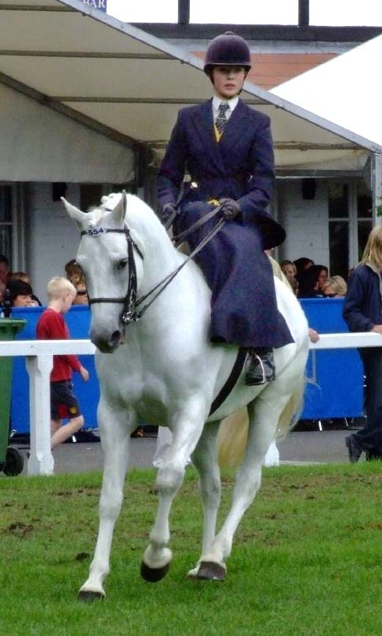
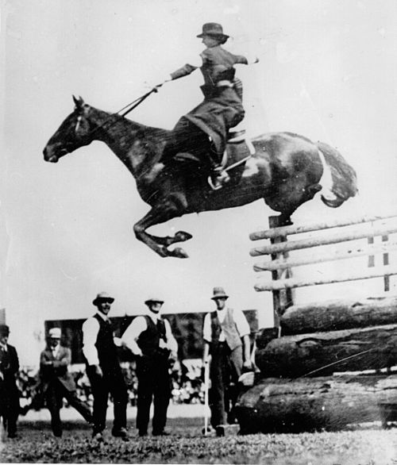
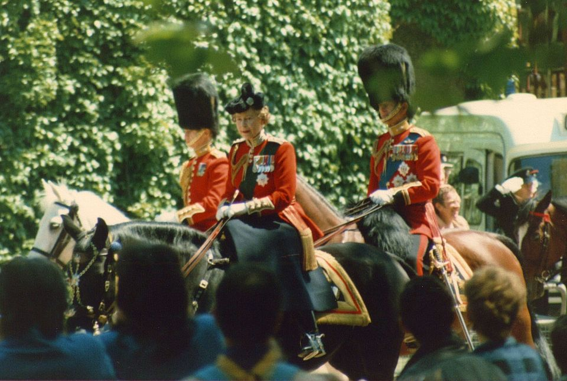
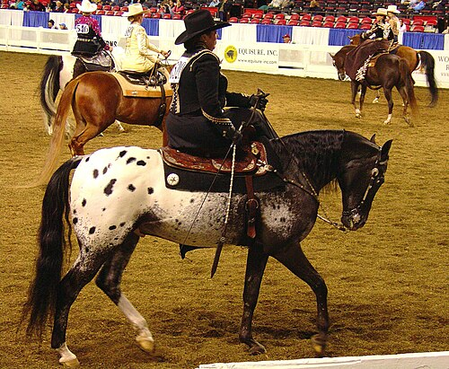
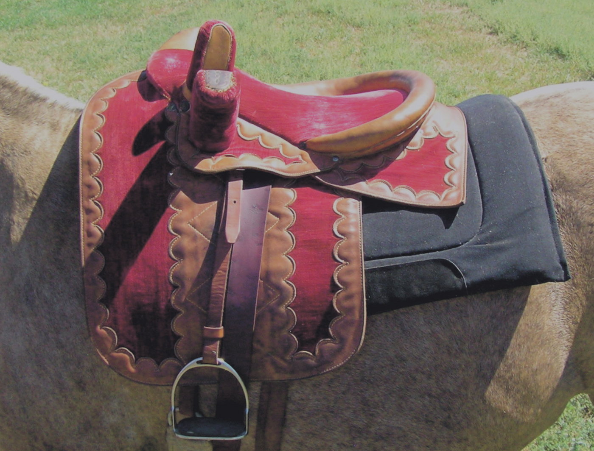
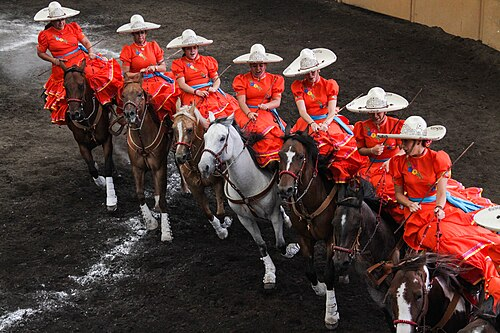

The Side Saddle: An Evolution Shaped by Constraint, Craft, and Culture
The side saddle was not created to improve riding performance. It was created to satisfy a social rule. In medieval and early modern Europe, upper-class women riding in public were not permitted to ride astride — and the saddle that emerged in response would be refined, pushed to its limits, and ultimately outlived by a world that no longer needed it.
Conception and Early Form
Astride posture was associated with labour, warfare, and masculine authority. For women of rank, appearance on horseback carried social meaning: posture, dress, and restraint mattered as much as movement. The side saddle emerged as a mechanical solution to this restriction, allowing women to appear mounted without violating expectations of propriety.

Its earliest forms reflected this clearly. Medieval side saddles were not riding saddles in any technical sense, but pillion or chair-type seats, often mounted behind a male rider and facing sideways. Balance and control were minimal. The rider functioned as a passenger rather than an independent horsewoman, and the saddle's purpose was transport and display rather than horsemanship.
As women increasingly rode alone, design shifted incrementally. By the late medieval period the rider was turned forward and a single fixed pommel introduced, allowing the right leg to hook over the saddle. This improved orientation and basic stability, making rein control possible. Even so, lateral security remained limited, and riding was confined to controlled paces and forgiving ground.
Technical Maturity and Peak Development
The decisive transformation came in the late eighteenth century with the addition of the second pommel — the leaping head — positioned beneath the rider's left thigh. This single innovation converted the side saddle into a stable riding system. With the pelvis supported between two fixed points, balance became structural rather than tentative. Riders could now travel at speed, negotiate uneven ground, and jump obstacles by absorbing movement through the core rather than gripping for security.

With the leaping head, the side saddle ceased to be a compromise and became a system.

Nowhere was this system pushed further than in Britain. Nineteenth-century fox hunting demanded endurance, speed, and jumping over solid country. British saddle makers refined pommel geometry, seat balance, and girthing to manage asymmetrical load and prevent roll. Skilled riders hunted side saddle under conditions as demanding as those faced by astride riders. This period represents the technical peak of side saddle development — driven by necessity rather than ornament.
Side Saddle — At a Glance
- Origin: Medieval Europe, likely 14th century
- Key innovation: The leaping head pommel, added in the late 18th century
- Peak use: 19th-century British fox hunting
- Riding position: Both legs on the left side; right leg over the fixed pommel, left thigh under the leaping head
- American variant: Lighter, flatter, less aggressive leaping head
- Decline: Early 20th century, as astride riding became socially accepted
- Survival: Specialist competition, traditional hunts, historical practice
Divergence: America and the Colonies

When the side saddle crossed to North America, its evolution diverged. American riding culture developed under different pressures. Astride riding was accepted earlier, particularly beyond the eastern elite, while frontier and stock work prioritised practicality over display. As a result, the American side saddle became a lighter, flatter offshoot of the European line.
American examples typically show less aggressive leaping heads, flatter seats, and reduced emphasis on maximum lateral lock. These saddles were well suited to park riding, social use, and light hunting, but were rarely pushed to the extremes seen in British cross-country work. This was not a failure of design, but a response to circumstance. Once astride riding became socially acceptable, there was little incentive to continue refining the side saddle toward peak performance.
In colonial regions such as India, Australia, and parts of Africa, the side saddle was adapted rather than reinvented. European structures were retained, but materials, padding, and girthing were modified for heat, distance, and mixed terrain. These adaptations emphasised endurance and practicality while still conforming to social expectations where they persisted.
"The side saddle is not a compromise. In the hands of a skilled rider, it is a highly specific system — one that demands balance, precision, and a different kind of strength."
Decline and Survival

By the early twentieth century, the forces that had created the side saddle had largely dissolved. Women rode astride openly, equestrian sport standardised, and practicality overtook convention. The side saddle declined not because it was unsafe or ineffective, but because the social restriction that necessitated it no longer existed.
Today, side saddle riding survives as a specialist discipline, preserved through competition, historical practice, and tradition-focused hunts. Modern saddles, often closest in form to the British hunting pattern, are carefully fitted and technically refined. Riding side saddle now is not about restriction, but about mastering balance, asymmetry, and precision within a highly specific system.

Viewed in full, the side saddle is neither costume nor curiosity. It is equipment shaped by social constraint, refined through craft, and altered by culture. Its story only makes sense when traced from conception through evolution and divergence to decline — and understood this way, it earns its place as serious equestrian engineering, not romantic artefact.
Related Stories

Escaramuza: Women, Horses, and Tradition in Mexico's Arena
Set to music and performed at full gallop, Escaramuza brings eight riders into the arena as a single unit. Riding sidesaddle, they move through crossing lines and sweeping turns with precision and control.

Lords of the Southern Plains: The Rise and Fall of the Comanche Horse Nation
For the Comanche, the horse was not a means of travel but the foundation of warfare, survival, and freedom. On the Southern Plains, they forged a style of horsemanship that reshaped power across a continent.

The Horses of the Camargue
Tough, white, and semi-feral, the Camargue horse is a living part of southern France's wetland culture. This article explores the breed's origins, traits, and working life with the Gardians.